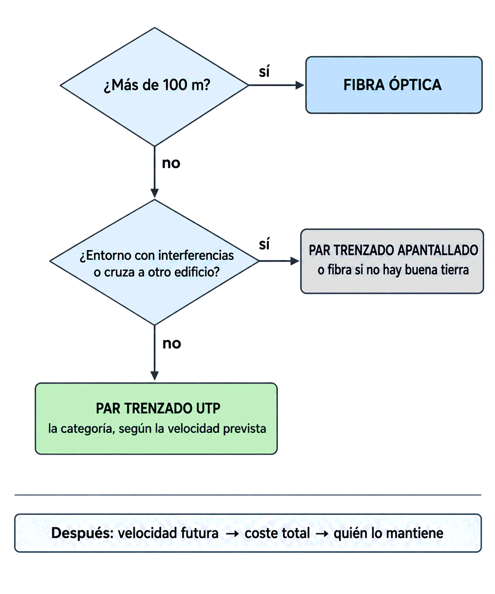

Contenido del día
1. Todos los medios, en una tabla
Esta es la tabla 3.5 del libro: velocidad máxima aproximada —sin tener en cuenta la longitud del cable— y distancia entre repetidores.
| Medio | Velocidad máxima | Distancia entre repetidores |
|---|---|---|
| Par trenzado | 1 Gbps | 2-10 km |
| Coaxial | 2 Gbps | 10-100 km |
| Fibra óptica | más de 10 Gbps | más de 100 km |
| Ondas de radio | 1 Mbps | 100-1 000 km |
| Microondas | 10 Mbps | 80 km |
| Infrarrojo | 10 Mbps | 200 m |
| Ondas de luz | 1 Mbps | 1 km |
- Las cuatro últimas filas son medios no guiados: se estudian la semana que viene. Aquí están para completar el cuadro.
- La columna «distancia entre repetidores» no es la longitud máxima de un enlace Ethernet. Son cosas distintas y confundirlas es el error clásico de esta tabla; lo aclara el apartado siguiente.
La tabla habla de a qué distancia hay que regenerar la señal en términos generales, mezclando usos que no son Ethernet: la telefonía, por ejemplo, lleva par trenzado a kilómetros a muy baja velocidad.
Los 100 m que conoces son el límite de un enlace Ethernet, y salen de la norma EIA/TIA-568: 90 m de cableado fijo más 10 de latiguillos. Ese es el número que manda al diseñar una red local. La propia tabla 3.6, que viene ahora, lo confirma.
2. Los medios de cobre, cara a cara
La tabla 3.6 compara solo los medios de cobre, y es mucho más útil para decidir porque incluye coste, flexibilidad e instalación:
| Característica | Coaxial grueso | Coaxial delgado | UTP | STP / FTP |
|---|---|---|---|---|
| Velocidad | 1 Gbps | 10 Mbps | 100 Mbps | 1 Gbps |
| Longitud máxima de segmento | 500 m | 200 m | 100 m | 100 m |
| Inmunidad a interferencias | Máxima | Buena | Mínima | Buena |
| Conectores | Transceptor | BNC | RJ-45 | RJ-45 |
| Flexibilidad física | Ninguna | Media | Máxima | Media |
| Dificultad de instalación | Alta | Baja | Media | Alta |
| Coste | Alto | Bajo | Muy bajo | Bajo |
Léela en vertical y en horizontal. En vertical se ve el perfil de cada medio; en horizontal, quién gana en cada criterio. Tres lecturas que conviene sacar:
- El UTP gana en coste y flexibilidad y pierde en inmunidad. Por eso es el medio por defecto: la mayoría de las oficinas no tienen un problema de ruido.
- El STP/FTP iguala al coaxial grueso en velocidad con un cable mucho más manejable, y por eso el coaxial desapareció de las redes locales.
- El coaxial delgado es más fácil de instalar que el UTP y aun así perdió: lo mató la topología en bus, no el cable. Se verá en el Mes 3.
Las longitudes máximas de segmento: coaxial grueso 500 m, delgado 200 m, par trenzado 100 m en cualquiera de sus formas. Y el conector del coaxial delgado: BNC.
3. Cobre frente a fibra
El libro compara los medios de cobre entre sí, pero no cobre contra fibra en una tabla. El currículo Cisco sí lo hace, con siete «cuestiones de implementación»:
| Cuestión de implementación | Medios de cobre | Fibra óptica |
|---|---|---|
| Ancho de banda admitido | 10 Mbps a 10 Gbps | 10 Mbps a 100 Gbps |
| Distancia | Relativamente corta: 1 a 100 m | Relativamente larga: 1 a 100 000 m |
| Inmunidad a EMI y RFI | Baja | Alta: totalmente inmune |
| Inmunidad a peligros eléctricos | Baja | Alta: totalmente inmune |
| Coste de medios y conectores | Más bajo | Más alto |
| Conocimientos de instalación | Menores | Mayores |
| Precauciones de seguridad | Menores | Mayores |
La fibra gana en las cuatro primeras filas y pierde en las tres últimas. Y eso responde a la pregunta de ayer: si la fibra es mejor, ¿por qué tu equipo va con cobre? Porque el cobre es más barato, lo instala cualquiera y no exige precauciones especiales… y porque a 30 metros de un switch, las ventajas de la fibra no se notan.
La inmunidad a EMI/RFI es de calidad de señal: que un motor cercano no meta errores.
La inmunidad a peligros eléctricos es de seguridad física: un cable de cobre conduce. Puede transportar una sobretensión de un rayo o una derivación de un edificio a otro, y freír el equipo del otro extremo… o a quien lo esté manipulando. La fibra no conduce electricidad, así que aísla galvánicamente los dos extremos. Por eso los enlaces entre edificios distintos se hacen con fibra aunque la distancia no lo exija.
4. Seguridad de los medios de cobre
Cuatro reglas, también del currículo Cisco, que resumen las precauciones al trabajar con cobre:
| Regla | Por qué |
|---|---|
| 1. La separación entre el cableado de datos y el de energía eléctrica debe cumplir los códigos de seguridad | Por seguridad de las personas y porque la línea eléctrica es una fuente de EMI constante |
| 2. Los cables deben estar conectados correctamente | Es todo lo del martes: conectores bien montados y sin forzar |
| 3. Las instalaciones deben inspeccionarse para detectar daños | Un aislante mordido o aplastado degrada el enlace y puede ser peligroso |
| 4. El equipo debe estar correctamente conectado a tierra | Sin tierra, las pantallas no sirven, y una derivación no encuentra por dónde irse |
Las cuatro tienen doble función: protegen a las personas y protegen la señal. La primera es la que más se incumple, porque tender el cable de datos por la misma canaleta que el eléctrico es cómodo y barato… hasta que aparecen los errores.
5. Cinco preguntas para decidir
Los seis criterios del lunes sirven para comparar. Para decidir hace falta un orden, porque algunos criterios descartan y otros solo matizan. Estas cinco preguntas, en este orden, resuelven casi cualquier tramo:
| # | Pregunta | Qué descarta |
|---|---|---|
| 1 | ¿Qué distancia hay? | Por encima de 100 m, el par trenzado queda fuera. Es la pregunta que más decide, y por eso va primera |
| 2 | ¿Cómo es el entorno? ¿Hay motores, soldadura, líneas eléctricas, otro edificio? | Con mucho ruido, el UTP queda fuera. Entre edificios distintos, el cobre queda fuera por los peligros eléctricos |
| 3 | ¿Qué velocidad hace falta, hoy y en diez años? | Descarta categorías bajas. El cable dura más que los equipos: se dimensiona para el futuro |
| 4 | ¿Cuánto cuesta en total? Material más montaje | Elige entre las opciones que han sobrevivido a las tres primeras |
| 5 | ¿Quién lo va a mantener? | Una solución que nadie sabe reparar es una mala solución, aunque sea la mejor sobre el papel |

¿más de 100 m? ── sí ──▶ FIBRA
│
no
▼
¿entorno ruidoso o cruza a otro edificio? ── sí ──▶ APANTALLADO o FIBRA
│
no
▼
UTP, con la categoría que pida la velocidad prevista6. Cuatro casos comentados
| Escenario | Decisión | Por qué |
|---|---|---|
| Oficina normal, 30 puestos, tramos de 20 a 45 m, falso techo limpio | UTP Cat 6 | La distancia entra, no hay ruido, el coste y la flexibilidad mandan. La Cat 6 en lugar de la 5e es margen de futuro por muy poco dinero |
| Taller con soldadura, tramos de 30 m | Apantallado, con tierra bien resuelta | La distancia entra, pero el entorno descarta el UTP. Y si nadie garantiza la puesta a tierra, entonces fibra |
| Dos edificios separados 300 m, mismo propietario | Fibra monomodo | La distancia descarta el cobre, y el salto entre edificios lo descartaría igualmente por los peligros eléctricos aunque fueran 80 m |
| Troncal entre dos plantas de un edificio, 60 m, 10 Gbps | Fibra multimodo o Cat 6A | Aquí sí hay debate: los dos llegan. Decide el coste total, incluidos los transceptores, y quién va a mantenerlo |
Fíjate en el tercer caso: dos razones independientes llevan a la misma conclusión. En un examen, dar las dos vale más que dar una; en un proyecto, significa que la decisión es sólida.
7. Los errores de criterio más caros
| Error | Qué pasa después |
|---|---|
| Elegir por el precio del metro | El montaje se come el ahorro. En fibra, varias veces |
| Dimensionar para la velocidad de hoy | El cableado dura 15 o 20 años y los equipos, 5. Volver a tirar cable cuesta mucho más que haber puesto una categoría más |
| Poner apantallado «por si acaso» | Más caro, más rígido, más difícil de montar y, sin tierra, peor que un UTP |
| Tender datos y corriente por la misma canaleta | Interferencias permanentes e incumplimiento de los códigos de seguridad |
| Usar cobre entre dos edificios | Diferencias de potencial, sobretensiones por rayo y equipos quemados. Es el error caro de verdad |
| Elegir fibra donde nadie sabe mantenerla | Cada incidencia depende de un tercero y de un equipo caro |
8. Resumen
- Tabla 3.5: par trenzado 1 Gbps, coaxial 2 Gbps, fibra más de 10 Gbps; repetidores a 2-10 km, 10-100 km y más de 100 km.
- Tabla 3.6: segmentos de 500 m (coaxial grueso), 200 m (delgado) y 100 m (par trenzado). Conector del delgado: BNC.
- El UTP gana en coste y flexibilidad; pierde en inmunidad.
- La fibra gana en ancho de banda, distancia, EMI y peligros eléctricos; pierde en coste, conocimientos e instalación.
- Cuatro reglas de seguridad del cobre: separación de la corriente · conexiones correctas · inspección · puesta a tierra.
- Se decide en este orden: distancia → entorno → velocidad futura → coste total → mantenimiento.
- Entre edificios distintos, fibra, aunque la distancia no lo exija.
9. Repaso con flashcards
Piensa la respuesta antes de girar la tarjeta.
Quiz del día
16 preguntas · 23 minutos · Contesta sin volver a la teoría
El cronómetro no corre mientras lees: arranca al llegar aquí, al pulsar «Empezar quiz» o al marcar tu primera respuesta.
Resultados
Respuestas correctas: 0 / 0
Respuestas incorrectas: 0
Una nave logística con cuatro tramos muy distintos. Eliges medio para cada uno, lo justificas con cifras, compruebas las distancias y entregas presupuesto y plano.
→ Ir al laboratorio del Día 4 (70 min)
Síntesis y test semanal: los cuatro días en una página, mazo completo de flashcards y test de 24 preguntas con desglose por día y hoja de recuperación.